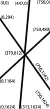
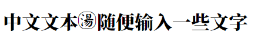
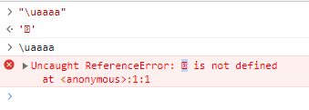
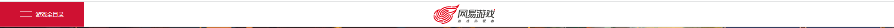

首页
该文档是对网易游戏部组件库的组件尝试使用，对各个组件及其配置熟悉下。
本文档为本人私人笔记，不具权威性，仅供参考，且更新时间不定。2023-08-10 14:24:49 tzj
导入
<!--国内内部组件-->
<!--PC-->
<script src="https://nie.res.netease.com/comm/js/jquery(mixNIE).1.11.js"></script>
<!--移动-->
<script src="https://nie.res.netease.com/comm/js/zepto(mixNIE).last.js"></script>
<!--海外内部组件-->
<!--PC-->
<script src="https://comm.res.easebar.com/js/jquery(mixNIE).1.11.js"></script>
<!--移动-->
<script src="https://comm.res.easebar.com/js/zepto(mixNIE).last.js"></script>
<!--代理合作-->
<!--PC-->
<script src="https://comm.res.easebar.com/js/tw/jquery(mixNIE).1.11.js"></script>
<!--移动-->
<script src="https://comm.res.easebar.com/js/tw/zepto(mixNIE).last.js"></script>
<!--内部组件代理合作版不支持该组件库-->
规范 外部组件若域名是
nie.res.netease.com则可以用外链，否则需下载到本地src/js/lib/插件.js。 海外和代理合作，将域名替换为comm.res.easebar.com。
初始化
注意 所有内部组件
nie.require("nie.util.模块名")必须写在nie.define的回调里，否则报错。
// copyright 设置white，写在外面
// nie.config.copyRight.setWhite();
// 模块，一般一个就够了，Index为暴露全局的变量名
nie.define("Index", function () {
//创建（分享）组件实例
const shareV5 = nie.require("nie.util.shareV5");
// 引入外部js，也可以是其他文件如.txt、.md，内容会直接插入
__inline('json.js');
const index = {
init: function () {
this.bind();
this.share();
},
bind: function () {
// 可以视为加载完成的回调
},
// 给模块定义方法
share: function () {
let shareTitle = $("#share_title").html();
let shareTxt = $("#share_desc").html();
let sharePic = $("#share_pic").attr("data-src");
let share = shareV5({
fat: "#NIE-share",
type: 1,
defShow: [23, 2, 1, 24],
title: shareTitle,
content: shareTxt,
img: sharePic
});
}
}
index.init();
// 暴露给全局
return index
});
待处理
- pre复制
- 路径加参数，自动跳转到指定页
- 弹出html，可编辑内容
window.location.protocol+"//"+window.location.host; // 返回https://mp.csdn.net
window.location.host; //返回url 的主机部分，例如：mp.csdn.net
window.location.hostname; //返回mp.csdn.net
window.location.href; //返回整个url字符串(在浏览器中就是完整的地址栏)
window.location.pathname; //返回/a/index.php或者/index.php
window.location.protocol; //返回url 的协议部分，例如： http:，ftp:，maito:等等。
window.location.port //url 的端口部分，如果采用默认的80端口，那么返回值并不是默认的80而是空字符
项目注意事项
网易游戏前端项目注意事项记录，欢迎补充
nie的组件初始化定义都在nie.define()里，否则可能报错。- 文件名不能大写
- js使用img路径时，用
_uri()，否则上线后混淆处理后，找不到文件 - 所有跳转官网的链接后缀一定要带
/index.html，如https://game.163.com/index.html而不是https://game.163.com/前者是官网地址，后者默认映射到前者，但有时候会改配置 - 该框架下，解构报错、class设置属性初始值时报错
jQuery库
版本
| 版本 | 引用地址 | 备注 |
|---|---|---|
| JQuery1.6.4 | http://res.nie.netease.com/comm/js/jquery(mixNIE).last.js | 很多旧站点使用的版本，有很多JQuery插件不支持，不推荐使用 |
| JQuery1.11 | http://res.nie.netease.com/comm/js/jquery(mixNIE).1.11.js | 比较新的版本，支持几乎目前所有JQuery插件，新产品都使用这个 |
| Zepto1.1.4 | http://res.nie.netease.com/comm/js/zepto(mixNIE).last.js | 移动端使用Zepto，没有包含animation模块，最基础的模块 |
额外的共用方法
nie.util.ajax
插入样式
nie.util.addStyle('body{background-color:red}');
$.cookie
操作cookie
//获取cookie
var val = $.cookie("the_cookie");
//设置cookie名为the_cookie，值为`the_value`，浏览器关闭则失效
$.cookie('the_cookie', 'the_value');
//设置cookie，过期7天，访问路径为/，域名为163.com的根域名
$.cookie('the_cookie', 'the_value', { expires: 7, path: '/', domain: '163.com', secure: true });
//删除cookie
$.cookie('the_cookie', null);
$.browser
判断浏览器类型和版本
console.log($.browser);
console.log("浏览器内核为："+$.browser.browser);
//判断是否IE
console.log($.browser.msie);
//判断是否webkit
console.log($.browser.webkit);
//获取版本号
console.log($.browser.version);
$.include
预加载文件，只能js、css,以src为根目录
//需要添加文件加载编码类型，在url中带上"?charset=gb2312"
//加载单个文件
$.include('js/app/data.js?charset=gb2312');
//加载单个文件并回调
$.include('js/app/data.js',()=>{
console.log("回调11");
});
//加载多个文件并回调同一个函数
$.include( ['css/inline.css','js/app/data.js'] ,()=>{
console.log("回调222");
});
分享组件shareV5说明
模块：
nie.util.shareV5说明：只有域名为
*.163.com才能分享，可在hosts文件添加配置，有的东西如分享图片share.jpg、分享文案，只有正式环境有效。测试地址和本地都不行。
调用示例
注意：官网 这里
defShow写错了，最后一个应该是24 **注意：**官网说可以将shareV5定义在外，实际会报错。非要外部调用，可以定义为模块属性，将整个模块暴露出去。 **注意：**参数无内容的时候 不必填写，请勿留空，填写""的时候会引发错误 ，如：url:""
var shareV5 = nie.require("nie.util.shareV5");
var share = shareV5({
fat:"#NIE-share",//分享组件插入父级（dom或选择器），默认："#NIE-share"
type:1,//分享组件类别，默认:1（1：小icon，2：大icon，3：右侧滚动条分享，4：图片分享，5：文本分享，6：带文字的小icon）
defShow:[23,22,2,1,24],//默认展示的分享按钮
title:null,//分享的标题,默认：当前页面的title
url:null,//分享的链接，默认：当前页面的url
img:null,//分享的图片，默认：null
content:null,//分享的正文内容，只有部分平台支持。默认：当前页面的title
product:"产品号" //选填，自适应163.com域名的产品，论坛需要指定（论坛指定规范：天下贰论坛 product="tx2_bbs"）
});
//修改分享的内容，字段与上面的对齐
share.modify({
title : '标题',
img : 'http://www.163.com/icon.png'
});
分享文案
该内容放在
src/inline/shareContent.html中，文案内容由具体项目的编辑提供，结构如下
<div id="share_content" style="display:none">
<div id="share_title" pub-name="分享文案" ></div>
<div id="share_url" pub-name="分享地址" ></div>
<div id="share_desc" pub-name="分享文本" ></div>
<img id="share_pic" data-src="#" pub-name="分享图片" />
</div>
并在index.html中预加载。
<link rel="import" href="inline/shareContent.html?__inline"/>
以上配置完成后，可以这样写：
nie.define("Index", function () {
const shareV5 = nie.require("nie.util.shareV5");
const index = {
init: function () {
this.bind();
this.share();
},
bind: function () {
},
// 给模块定义方法
share: function () {
let shareTitle = $("#share_title").html();
let shareTxt = $("#share_desc").html();
let sharePic = $("#share_pic").attr("data-src");
let share = shareV5({
fat: "#NIE-share",
type: 1,
defShow: [23, 2, 1, 24],
title: shareTitle,
content: shareTxt,
img: sharePic
});
}
}
index.init();
});
按钮参数
| 按钮 | 参数 |
|---|---|
| 微信 | 23 |
| 易信 | 22 |
| 新浪微博 | 2 |
| QQ空间 | 1 |
| 腾讯微博 | 3 |
| 人人网 | 8 |
| QQ好友 | 24 |
| 豆瓣 | 11 |
| 百度贴吧 | 14 |
图片查看器lightbox2
使用
1.引入：
<script type="text/javascript" src="https://nie.res.netease.com/comm/js/jquery(mixNIE).1.11.js"></script>
<script type="text/javascript" src="https://nie.res.netease.com/comm/js/nie/ref/lightbox2.js"></script>
2.html结构：
把需要查看大图的
img用a标签包着，增加data-lightbox属性。其中href属性值是大图的地址，data-title属性值是大图的标题，
<!-- 一张图片 -->
<a href="http://dummyimage.com/100x100/ddd/79c" data-lightbox="image-1" data-title="My caption">
<img src="http://dummyimage.com/90x90/ddd/79c" alt="">
</a>
<!-- 一组图片（data-lightbox的值是相同的） -->
<a href="http://dummyimage.com/1990x90/ddd/79c" data-lightbox="image-2" data-title="My caption">
<img src="http://dummyimage.com/90x90/ddd/79c" alt="">
</a>
<a href="http://dummyimage.com/990x990/ddd/79c" data-lightbox="image-2" data-title="My caption">
<img src="http://dummyimage.com/90x90/ddd/79c" alt="">
</a>
<a href="http://dummyimage.com/90x1990/ddd/79c" data-lightbox="image-2" data-title="My caption">
<img src="http://dummyimage.com/90x90/ddd/79c" alt="">
</a>
3.js设置参数：
lightbox.option({
// 显示箭头未生效
alwaysShowNavOnTouchDevices: false, //查看大图时左右切换箭头是否一直显示，默认是鼠标经过才显示
albumLabel: "图片 %1 共 %2", //查看大图时显示在标题下的图片数量信息。默认显示当前的图像数和在集合中的图像的总数。
disableScrolling: false, //查看大图时，页面是否禁止滚动
fadeDuration: 300, //显示大图淡入淡出的时间，单位是毫秒
fitImagesInViewport: true, //大图的高度是否自适应浏览器的视窗大小
maxWidth: "", //查看大图显示的最大宽度，单位是px
maxHeight: "", //查看大图显示的最大高度,单位是px
positionFromTop: 50, //大图距离视窗顶部的距离，单位是px
resizeDuration: 500, //大图宽高变化的过渡时间，单位是毫秒
showImageNumberLabel: true, //是否显示大图的图片数量信息文本
wrapAround: false, //查看大图是否可以循环切换
})
官网订阅组件
官方文档demo异常，该组件放到后面再看
六马系统使用的图册组件
提供给六马系统使用的图册组件，兼容PC和移动端
使用
var ImageShow = nie.require("nie.util.imageshow");
ImageShow.init({
container : "#carousel", //放图册的容易ID
host : 'tuku.my.163.com', //推荐图册的host，如果没有，请留空
channel_id : '55ac5363d2742e1803904d04', //推荐图册的栏目ID，如果没有，请留空
name : "美女图集,看到流口水", //图册名字
width : 600, //图册宽度，默认为600
link : 'http://www.baidu.com', //图册实际地址，如果无，请留空
type : "pc", //图册类型，pc和m，两种，不填则自动根据当前是PC还是移动选择
cur : 0, //图册初始化切换到第几张图，默认值为0，下标从0开始，超出图册长度则默认为0
callback : function(page,type){ //翻页回调
//当前页码，从0开始
console.log(page);
//翻页模式，1为普通，2为全屏
console.log(type);
},
//图册数组
data : [
{
thumb : "http://c.cotton.netease.com/buckets/4EUyqb/files/ADJcjJLuiyR", //缩略图
big : "http://c.cotton.netease.com/buckets/4EUyqb/files/AZKWbqtYAxg", //大图
desc : "怒海龙吟：彼岸花ぃ晨曦" //图描述
},
{
thumb : "http://c.cotton.netease.com/buckets/4EUyqb/files/FlXh3ca1WCh",
big : "http://c.cotton.netease.com/buckets/4EUyqb/files/4O8hKQOtFLM",
desc : "怒海龙吟：彼岸花ぃ晨曦2"
}
],
//以下参数仅限移动端使用
hide_footer : true, //不显示全屏下的底部说明
pre_btn : ".pre", //上一页按钮的选择器，样式需要自己控制
next_btn : ".next", //下一页按钮的选择器，样式需要自己控制
full_btn : ".full" //显示全屏的按钮的选择器，样式需要自己控制
});
复制文本组件
用法如下：
官网第二个
copy多打了个t 注意：text属性值，用jQuery取错值（如input.text()）不会报错，且剪切板不会替换为空""，却能触发回调。经测试，能隐式转false的值都如此。
var copy = nie.require("nie.util.copytext");
copy({
btn : ".copy", // 点击按钮selector
text : $(".text").val(), // 需要复制的文本
callback : function (){ // 复制成功后，回调函数
alert("复制成功！");
}
});
**注意：**以下用法无效，不知用法不对还是插件bug。
或者：
- 用jQuery 初始化点击按钮
- 参数1：需要复制的文本
- 参数2：复制成功后，回调函数
var copy = nie.require("nie.util.copytext");
$(".copy").NIEcopyText( $(".text").text(), function (){
alert("复制成功！");
});
弹层的使用：普通的弹窗、flash、视频
有时间自己修改下: 2023-07-20 17:43:03 tzj - 没有模态窗样式 - a标签给个缩进样式直接看不见了 - 无脑
z-index:99999也不好 - 太冗杂，只保留一个模态窗常用的即可
html结构
<!--普通弹层-->
<div class="dTc" id="shareTc" style="display:none">
<h3 class="hide">分享赢龙马，送贴心防雾霭口罩</h3>
<a class="aCloseQ" href="javascript:void(0)"></a>
</div>
<!--flash弹层-->
<div id="flashtc1" class="dTc" style="display:none">
<a href="javascript:void(0)" class="aCloseQ"></a>
<div id="flash-wrap"></div>
</div>
<!--视频弹层-->
<div class="dTc videoBox" id="videoShow" style="display: none">
<a class="aCloseQ" title="关闭">关闭</a>
<div class="dialogCon">
<div class="dVideoBox"><div id="dVideo"></div></div>
</div>
</div>
css
/*弹层蒙版*/
.dTc{position:absolute;zoom:1;top:200px;z-index:999999}
.aCloseQ{display:block;position:absolute;right:21px;top:27px;width:20px;height:20px;cursor:pointer;text-indent: -9999px}
#NIE-overlayer{display:none;position:absolute;width:100%;height:100%;background:#000;filter:alpha(opacity=80);opacity:.8;top:0;left:0;z-index:99}
/*视频弹层*/
.videoBox {background: #000;}
.videoBox .dialogCon {overflow: hidden;padding: 5px;}
.videoBox .dVideoBox {border: 1px solid #999;padding: 4px;background: #666;}
.videoBox .aCloseQ {position: absolute;width: 57px;height: 57px;display: block;right: -57px;top: 0;cursor: pointer;overflow: hidden;text-indent: -9999px;background: url(http://res.nie.netease.com/tx3/gw/13v1/images/close.jpg) no-repeat 0 0;}
js
$(function(){
//-----------以下为普通弹层示例
$('#pop1').click(function(){
openD({
id: '#shareTc',//弹出的弹层id
type : '1'//1为普通弹层，2为flash弹层，3为视频弹层
})
})
//-----------以下为flash弹层示例
$('#pop2').click(function(){
openD({
id: '#flashtc1',//弹出的弹层id
type : '2',//1为普通弹层，2为flash弹层，3为视频弹层
width: '960',//弹层宽度
height: '600',//弹层高度
flashurl:'http://res.nie.netease.com/xy2/qt/14/0109_biwu/pop.swf',//弹层所需的flash地址
wmode: 'opaque'
})
})
//-----------以下为视频弹层示例
$('#pop3').click(function(){
openD({
id: '#videoShow',//弹出的弹层id
type : '3',//1为普通弹层，2为flash弹层，3为视频弹层
width: '800',//弹层宽度
height: '450',//弹层高度
videourl:'http://v.nie.netease.com/tx3/2013/1231/longwu.f4v'//弹层所需的flash地址
})
})
})
//flash自己内部调用的函数
var closeMe = function(){
$("#NIE-overlayer").hide();
$('.aCloseQ').show();
$('#flashtc1').hide();
}
封装方法
//弹层
//--这个函数是将三种基本弹层合在一体的，所以代码会比较长一些，可以根据需求自己独立出来相对应的弹层代码
function openD(opt) {
//只针对一个tab con
var settings = {
id: '',
type: '',//1为普通弹层，2为flash弹层，3为视频弹层
width: '',//2和3需要使用
height: '',//2和3需要使用
flashurl: '',//2需要使用，flash地址
videourl: '',//3需要使用，视频地址
wmode: '',//2和3可能需要使用
startImg: ''//3需要使用，视频截图
}
opt = opt || {};
settings = $.extend(settings, opt);
var popbg = $("#NIE-overlayer"),
popid = $(settings.id),
type = settings.type,
w = parseInt(settings.width),
h = parseInt(settings.height),
vimg = settings.startImg,
furl = settings.flashurl,
vurl = settings.videourl,
wmode = settings.wmode,
dh = $(document).height(),
wh = $(window).height(),
ww = $(window).width(),
st = $(window).scrollTop(),
sl = $(window).scrollLeft();
// 蒙版弹出
popbg.css({"height": dh}).show();
// 弹层弹出
function posPop(idname) {
idname.height() > wh ? idname.fadeIn().css({
'top': st,
'left': (ww - idname.width()) / 2 + sl
}) : idname.fadeIn().css({
'top': (wh - idname.outerHeight()) / 2 + st,
'left': (ww - idname.outerWidth()) / 2 + sl
});
}
// 弹层关闭
$('.aCloseQ').click(function () {
$(this).parent().fadeOut();
$("#NIE-overlayer").hide();
});
//判断弹层类别
switch (type) {
case '1':
posPop(popid);
break;
case '2':
$('#flash-wrap').html('');
nie.use(["util.swfobject"], function () {
$('#flash-wrap').flash({
swf: furl,
width: w,
height: h,
allowScriptAccess: 'always',
wmode: wmode
});
})
var obj = $('#flashtc1');
obj.css({'width': w, 'height': h});
$('.aCloseQ').hide();//flash本身有做关闭按钮
posPop(popid);
break;
case '3':
$('#dVideo').html('').css({'height': h + 'px', 'width': w + 'px'});
popid.css({'height': h + 22 + 'px', 'width': w + 22 + 'px'});
posPop(popid);
nie.use(['nie.util.video'], function () {
nie.util.video($('#dVideo'), {
movieUrl: vurl,
mp4_movieUrl: vurl.replace(/\.(flv|f4v)/, '.mp4'),
width: w,
height: h,
startImg: vimg,
bufferTime: 5,
loopTimes: 0,
wmode: "opaque",
volume: 0.8,
autoPlay: true
});
})
break;
default :
break;
}
}
视频组件videoV2
注意 使用该组件，全部不在html绑定
onclick，因为会发错，比如这里的：停止、销毁、改变路径，报错：not a function。统一在js里添加事件监听
- 停止
video.stop(): 无法再次播放 - 销毁
video.destroy(): 销毁节点 - 改源
video.change(): 改变路径后不会自动播放，即便设置了autoPlay，需要手动调用video.play()。
var videoModule = nie.require("nie.util.videoV2");
var video = videoModule({
fat : "#video",//放视频的容器
width:"600",//视频宽度
height:"400",//视频高度
//wmode:"direct",//flash wmode值,默认direct
movieUrl:"",//标清视频地址
HDmovieUrl : "",//高清视频地址
SHDmovieUrl : "",//超清视频地址
vtype : "",//默认选用哪种清晰度，分别有d,hd,shd，默认不填则会采用校验网速然后自动匹配
//autoPlay:false,//是否自动播放，默认false
//startImg:null,//开始图片地址，默认false
//loopTimes:0,//循环播放次数，默认0
//maskImg:null,//整个flash顶部遮罩图片地址，默认null
//bufferTime:5//缓冲时间（秒）,默认5
});
video.change(movieURL);//改变视频地址
video.pause();//暂停视频
video.stop();//停止视频
video.play();//播放视频
video.destroy();//清空并销毁视频
音频组件audio
电脑音频驱动好像有问题，先搁置该组件
服务器时间组件bjTime
var Time = nie.require("util.bjTime");
Time.bjTime.getDate(function(time){
console.log(time);
//time.dateObj 时间对象
//time.year 年份
//time.month 月份
//time.date 日
//time.day 星期几的索引值
//time.cnWeek 中文的星期几
//time.monthTotalDay 本月总日数
//time.firstDayCnWeek 本月1号 是星期几
//time.weekNum 今天是本月第几周
});
待编辑
栅格布局网格布局grid
-
CSS Grid 网格布局教程 .row { position: relative;
.col-1 { width: 8.33333%; }
.col-2 { width: 16.66667%; }
.col-3 { width: 16.66667%; }
.col-4 { width: 16.66667%; }
.col-5 { width: 16.66667%; }
.col-6 { width: 16.66667%; }
.col-7 { width: 16.66667%; }
.col-8 { width: 16.66667%; }
.col-9 { width: 16.66667%; }
.col-10 { width: 16.66667%; }
.col-11 { width: 16.66667%; }
.col-12 { width: 16.66667%; }
.col-13 { width: 16.66667%; }
.col-14 { width: 16.66667%; }
.col-15 { width: 16.66667%; }
.col-16 { width: 16.66667%; }
.col-17 { width: 16.66667%; }
.col-18 { width: 16.66667%; }
.col3-19{ width: 16.66667%; }
.col-20 { width: 16.66667%; }
.col-21 { width: 16.66667%; }
.col-22 { width: 16.66667%; }
.col-23 { width: 16.66667%; }
.col-24 { width: 16.66667%; }
}
浏览器适配
不同浏览器语法有区别，记录一下常用适配方法
前缀
- -webkit- （谷歌，Safari，新版Opera浏览器，所有基于WebKit 内核的浏览器）
- -moz- （火狐浏览器）
- -o- （旧版Opera浏览器）
- -ms- （IE浏览器 和 Edge浏览器）
滚动条
滚动条样式
如果只是设置样式，不操作逻辑，完全可以自己写。
.scroll(@width:0){
/* 设置滚动条的宽度 */
::-webkit-scrollbar {
width: @width;
}
/* 设置滚动条轨道的背景颜色 */
::-webkit-scrollbar-track {
background-color: #f1f1f1;
}
/* 设置滚动条的滑块颜色 */
::-webkit-scrollbar-thumb {
background-color: #888;
}
/* 设置滑块的圆角 */
::-webkit-scrollbar-thumb:vertical {
border-radius: 5px;
}
/* 当鼠标悬停在滚动条上时的滑块颜色 */
::-webkit-scrollbar-thumb:hover {
background-color: #555;
}
}
chrome
.scroll() {
overflow: scroll;
//width只对纵向滚动条生效
//height只对横向滚动条生效
// —— 滚动条总占位的 宽、高、背景色(白)、border，无hover
::-webkit-scrollbar {
width: 100px;
height: 30px;
border: 1px solid pink;
}
// —— 轨道，背景色(红，图，display:none)、内阴影、圆角，有:hover
::-webkit-scrollbar-track {
//background-color: #777;
}
//—— 滑块，背景色（黑）、内阴影、圆角，有:hover；
// （滑块也可以分别设置，纵向滑块 —— ::-webkit-scrollbar-thumb:vertical，横向滑块 —— ::-webkit-scrollbar-thumb:horizontal）
::-webkit-scrollbar-thumb {
background-color: #000;
}
// —— 两端按钮(两端的三角形按钮)，默认display: none;(红，图)，有:hover
::-webkit-scrollbar-button {
background-color: #777;
width: 10px;
height: 4px;
}
// —— 右下角汇合处样式，默认display: none;(白，图)
::-webkit-scrollbar-corner {
}
::-webkit-resizer {
}
// ：两个滚动条交汇处用于拖动调整元素大小的小控件 —— x
::-webkit-scrollbar-track-piece {
}
// ：轨道，会覆盖2轨道（图，色，display: none） —— x
}
不规则div点击事件
现有一个图片素材：划分为多个区域，分别点击触发对应事件
先在PS中找出各个转折点的坐标（相对左上角）则六个区域的顶点坐标如下：

一、div旋转、层级
示例：(点击各区域查看控制台)
设置多个div，旋转实现，要是不够，可适当多个拼接。笨方法，知识要求低，调整很麻烦。
#test1 {
width: 750px;
height: 1624px;
position: relative;
overflow: hidden;
background-image: url(./img/899_bg.png);
border: 1px solid;
}
#test1 > div {
/*border: 1px solid red;*/
height: 100px;
width: 100px;
position: absolute;
}
#test1 > div:nth-child(1) {
width: 444px;
height: 800px;
top: -39px;
transform-origin: top left;
transform: rotate(5deg);
z-index: 1;
}
#test1 > div:nth-child(2) {
left: 468px;
top: -31px;
width: 347px;
height: 831px;
transform-origin: top left;
transform: rotate(6deg);
z-index: 2;
}
#test1 > div:nth-child(3) {
transform-origin: top left;
transform: rotate(54deg);
top: 304px;
width: 637px;
height: 477px;
z-index: 3;
}
#test1 > div:nth-child(4) {
transform-origin: top left;
transform: rotate(47deg);
top: 324px;
left: -89px;
width: 674px;
height: 518px;
z-index: 3;
}
#test1 > div:nth-child(5) {
top: 829px;
z-index: 4;
left: 375px;
transform-origin: top left;
transform: rotate(46deg);
width: 453px;
height: 750px;
}
#test1 > div:nth-child(6) {
top: 839px;
z-index: 5;
transform-origin: left;
transform: rotate(5deg);
left: 342px;
text-align: right;
width: 450px;
height: 794px;
}
#test1 > div:nth-child(7) {
top: 815px;
z-index: 6;
left: 391px;
transform-origin: left top;
transform: rotate(-37deg);
width: 469px;
height: 664px;
}
#test1 > div:nth-child(8) {
z-index: 6;
left: 388px;
top: 812px;
transform-origin: left top;
transform: rotate(-43deg);
width: 488px;
height: 536px;
}
function box(i) {
console.log("点击的第" + i + "个")
}
<div id="test1">
<div onclick="box(1)">1</div>
<div onclick="box(2)">2</div>
<!-- <div onclick="box(2)">2</div>-->
<div onclick="box(3)">3</div>
<div onclick="box(3)">3</div>
<div onclick="box(4)">4</div>
<div onclick="box(5)">5</div>
<div onclick="box(6)">6</div>
<div onclick="box(6)">6</div>
</div>
二、map
示例：
coords的属性值单位是px，适配屏幕时，要重新计算。参考获取px值
<div id="myDiv">
<img src="your-image.jpg" usemap="#myMap">
<map name="myMap">
<!-- 在这里添加具体的非长方形区域 -->
<area shape="poly" coords="x1,y1,x2,y2,x3,y3,..." href="#" alt="区域1">
<area shape="poly" coords="x1,y1,x2,y2,x3,y3,..." href="#" alt="区域2">
<area shape="poly" coords="x1,y1,x2,y2,x3,y3,..." href="#" alt="区域3">
...
</map>
</div>
let areas = document.querySelectorAll('#myDiv area');
areas.forEach(function (area, index) {
area.addEventListener('click', function (event) {
event.preventDefault();
console.log(area.alt, index);
})
})
三、数学函数
示例：
让父级div触发同一个点击事件，然后判断点击的位置，代入预设好的数学函数中，满足哪个，就触发其方法。
这里示例设置的是
transform: scale(0.1);，缩小后对点击完全无影响。如果用的rem导致宽高自适应变化时，应该不行，待测。
function findLineEquation(x1, y1, x2, y2) {
let a = (y2 - y1) / (x2 - x1);
let b = y1 - a * x1;
return (x, y) => {
let _y = a * x + b;// _y=f(x)
return y < _y; // 点击位置是否在直线的上方
};
}
// 三条直线的函数：
let f1 = findLineEquation(0, 294, 750, 1342);
let f2 = findLineEquation(447, 0, 313, 1624);
let f3 = findLineEquation(0, 1164, 750, 480);
document.getElementById("test3").addEventListener("click", function (event) {
let x = event.offsetX;
let y = event.offsetY;
console.log("点击位置的坐标： x=" + x + ", y=" + y);
let b1 = f1(x, y);// 点击位置是否在f1的上方
let b2 = f2(x, y);
let b3 = f3(x, y);
console.log(b1, b2, b3);
if (b1 && b2) {
console.log(1);
} else if (!b2 && b3) {
console.log(2);
} else if (!b1 && b3) {
console.log(3);
} else if (b2 && !b3) {
console.log(4);
} else if (!b1 && !b2) {
console.log(5);
} else if (b1 && !b3) {
console.log(6);
} else {
console.log("边框？还是逻辑错误？");
}
});
四、css
屏幕适配rem
项目中要使用
rem，且适配不同屏幕自动缩放1rem = 【html font-size（默认16px）】 * 【比例（初始设置625%）】 = 【默认值（100px）】
缩放处理
html {
height: 100%;
font-size: 625%;
}
const Utils = {
// 适配屏幕比例
get scale() {
let scale = 625;
let w = document.documentElement.clientWidth;
let h = document.documentElement.clientHeight;
if (w < 1400) {
scale = 1400 / 1920 * 625;
}
/*else if(w > 1920){ //如果需求方需要大于1920左右留白
_fontsize = 625
}*/
else if (w / h > 3) {
scale = h * 3 / 1920 * 625;
} else {
scale = w / 1920 * 625;
}
return scale;
}
}
const initScreen = function (callback) {//初始化html font-size
$("html").css("font-size", Utils.scale + "%");
if (callback) callback();
}
$(document).ready(() => {
initScreen();
})
$(window).resize(function () {
initScreen();
})
获取px值
很多插件的参数只能用px，而使用以上代码后，rem值是固定的，但px值不确定，这里封装下。
const Utils = {
// 适配屏幕比例
get scale() {
// ......
},
/**
* 像素计算
* @param n{number} 默认比例下的初始像素值
* @return {number} 当前比例下的像素值
* */
getPx(n) {
return (n / 100) * this.scale * 16 / 100;
}
}
调用的时候：
// plugin：只支持px的插件方法名
plugin({
width: Utils.getPx(100)// 传入原比例时像素值
})
其他
长屏有滚动条时，则比例就不是625%，控制台显示的也不是原大小。可以设置隐藏滚动条但不禁用，仅用于调试，后面记得删。
/* 设置滚动条的宽度 */
::-webkit-scrollbar {
width: 0;
}
局部刷新
查询数据渲染到页面时，如果每次清空节点，重新生成，性能消耗很大，用户体验很差。在这点上，vue就已经做得很好了，不是操作整个dom，而是更新数据。
在有些场景下，不使用vue等框架，就只能自己写了。
例如初始化写一页10个item，设置好style，数据留空，给class默认
display:none查询到数据时，遍历更新dom数据，超出的dom隐藏
难点在于：有内容（text）有属性（attribute）、有事件，要封装的话就得深入理解vue原理，自己用js或jQuery简单封装。
html转画布工具html2canvas
该插件是将html元素生成为
<canvas>。
贴代码：常用模板
let dom = document.querySelector("#root");// 不能用jQuery取
$(dom).show();
html2canvas(dom, {}).then(canvas => {
// 成功回调
$(dom).after($(canvas));
$(dom).hide();
})
语法
调用时，目标节点必须可见，且不能超出可见范围，所见即所得。
部分css样式该插件无法识别，如文字纵向、
border-image-source等
html2canvas(element, options);
let dom = document.querySelector("#root");// 不能用jQuery取
html2canvas(dom, {}).then(canvas => {
// 成功回调
$(dom).after($(canvas));
$(dom).hide();
// let imgUrl = canvas.toDataURL();
// imgDom.attr(src,imgUrl);
})
属性选项
| 属性名 | 默认值 | 描述 |
|---|---|---|
| allowTaint | FALSE | 是否允许跨域图像。会污染画布，导致无法使用canvas.toDataURL 方法 |
| backgroundColor | #ffffff | 画布背景色（如果未在DOM中指定）。设置null为透明 |
| canvas | null | 现有canvas元素用作绘图的基础 |
| foreignObjectRendering | FALSE | 如果浏览器支持，是否使用ForeignObject渲染 |
| imageTimeout | 15000 | 加载图像的超时时间（以毫秒为单位）。设置0为禁用超时。 |
| ignoreElements | (element) => false | 谓词功能，可从渲染中删除匹配的元素。 |
| logging | TRUE | 启用日志以进行调试 |
| onclone | null | 克隆文档以进行渲染时调用的回调函数可用于修改将要渲染的内容，而不会影响原始源文档。 |
| proxy | null | 代理将用于加载跨域图像的网址。如果保留为空，则不会加载跨域图像。 |
| removeContainer | TRUE | 是否清除html2canvas临时创建的克隆DOM元素 |
| scale | window.devicePixelRatio | 用于渲染的比例。默认为浏览器设备像素比率。 |
| useCORS | FALSE | 是否尝试使用CORS从服务器加载图像 |
| width | Element width | canvas的宽度 |
| height | Element height | canvas的高度 |
| x | Element x-offset | 裁剪画布X坐标 |
| y | Element y-offset | 裁剪画布y坐标 |
| scrollX | Element scrollX | 渲染元素时要使用的x滚动位置（例如，如果Element使用position: fixed） |
| scrollY | Element scrollY | 呈现元素时要使用的y-scroll位置（例如，如果Element使用position: fixed） |
| windowWidth | Window.innerWidth | 渲染时使用的窗口宽度Element，这可能会影响媒体查询之类的内容 |
| windowHeight | Window.innerHeight | 渲染时要使用的窗口高度Element，这可能会影响媒体查询之类的内容 |
尺寸处理
由于项目中需要用
rem，并进行屏幕适配自动缩放。而该插件宽高只能用数字number，故而需要处理一下。参考：屏幕适配rem
html2canvas(dom, {
width: Utils.getPx(100)// 100为初始比例像素值
})
文字生成二维码QRCode
先是jquery.qrcode，没什么好说的，引入
jQuery.js，再引入jquery.qrcode.js相当于
$("#test").append(canvas)，返回jquery节点$(canvas)。
Utils.getPx()是自己封装的，见屏幕适配rem
$("#test").qrcode({
width: Utils.getPx(118),
height: Utils.getPx(118),
// correctLevel: 3,
text: window.location.href, //内容
// typeNumber: -1, //计算模式
// background: "#fff", //背景颜色
// foreground: "#000", //二维码颜色
});
qrcode.js和上面用法差不多，第一个参数为id或者document，不依赖jQuery库。返回canvas节点对象
new QRCode("test", {
text: window.location.href,
width: Utils.getPx(118),
height: Utils.getPx(118),
// colorDark : "#000000",
// colorLight : "#ffffff",
// correctLevel : QRCode.CorrectLevel.H // 默认等级2，可全局配置
});
足够简单使用了，详细参数用到再写上
字体包压缩fontmin

要求不能占用太多服务器内存，而部分项目对字体有要求，可进行字体包压缩
fontmin
cnpm install --save fontmin
// npm install --save fontmin
var Fontmin = require('fontmin');
var srcPath = './fonts/source_han_serif_cn_heavy.ttf'; // 字体源文件
var destPath = './myFonts'; // 输出路径
var text = `
这里填入要生成的文字
0123456789
abcdefghijklmnopqrstuvwxyz
ABCDEFGHIJKLMNOPQRSTUVWXYZ
`
// 初始化
var fontmin = new Fontmin()
.src(srcPath) // 输入配置
.use(Fontmin.glyph({ // 字型提取插件
text: text // 所需文字
}))
// .use(Fontmin.ttf2eot()) // eot 转换插件
// .use(Fontmin.ttf2woff()) // woff 转换插件
// .use(Fontmin.ttf2svg()) // svg 转换插件
// .use(Fontmin.css()) // css 生成插件
.dest(destPath); // 输出配置
// 执行
fontmin.run(function (err, files, stream) {
if (err) throw err;
console.log('done'); // 成功
});
FontCreator
以上方法要.ttf文件，转格式软件：下载地址，文件file->打开open->字体文件font file->文件夹选择字体，首次打开很慢，等会。然后另存为
.ttf格式
node
一、nvm
来回手动切换版本，很不方便很不保险，使用node版本管理工具：NVM。
- 卸载node，删除相关文件夹
- 去官网下载安装
- 安装检测：
nvm -v、node -v - 若版本管理里没有想要的，在nvm安装目录（
C:\Users\Admin\AppData\Roaming\nvm）下新建目录，去官网找到指定版本装到此处
1. 常用指令
nvm arch：显示node是运行在32位还是64位。
nvm install <version> [arch] ：安装node， version是特定版本也可以是最新稳定版本latest。可选参数arch指定安装32位还是64位版本，默认是系统位数。可以添加--insecure绕过远程服务器的SSL。
nvm list [available] ：显示已安装的列表。可选参数available，显示可安装的所有版本。list可简化为ls。
nvm on ：开启node.js版本管理。
nvm off ：关闭node.js版本管理。
nvm proxy [url] ：设置下载代理。不加可选参数url，显示当前代理。将url设置为none则移除代理。
nvm node_mirror [url] ：设置node镜像。默认是https://nodejs.org/dist/。如果不写url，则使用默认url。设置后可至安装目录settings.txt文件查看，也可直接在该文件操作。
nvm npm_mirror [url] ：设置npm镜像。https://github.com/npm/cli/archive/。如果不写url，则使用默认url。设置后可至安装目录settings.txt文件查看，也可直接在该文件操作。
nvm uninstall <version> ：卸载指定版本node。
nvm use [version] [arch] ：使用制定版本node。可指定32/64位。
nvm root [path] ：设置存储不同版本node的目录。如果未设置，默认使用当前目录。
nvm version ：显示nvm版本。version可简化为v。
2. nvm切换国内镜像
如果下载node过慢或者安装失败，请更换国内镜像源,
在 nvm 的安装路径下，找到 （默认地址：
C:\Users\Admin\AppData\Roaming\nvm\settings.txt）settings.txt，设置node_mirro与npm_mirror为国内镜像地址。下载就飞快了~~
root: D:\nvm
path: D:\nodejs
nvm npm_mirror https://npmmirror.com/mirrors/npm/
nvm node_mirror https://npmmirror.com/mirrors/node/
或者：
node_mirror: https://npm.taobao.org/mirrors/node/
npm_mirror: https://npm.taobao.org/mirrors/npm/
指令切换：
nvm npm_mirror https://npmmirror.com/mirrors/npm/
nvm node_mirror https://npmmirror.com/mirrors/node/
3. 指令demo
nvm list
nvm list available
nvm install 16.17.0
nvm use 14.21.3
4. 低版本安装npm
查看node版本
- 去这里→看对应npm版本
- 去淘宝→找到对应版本并下载
- 放到nvm目录下指定版本里的
node_moudle下，如：C:\Users\Admin\AppData\Roaming\nvm\v14.21.3\node_modules并将cli-6.14.18改名为npm - 然后将npm里的bin下的
npm、npm.cmd放到node版本目录下，如C:\Users\Admin\AppData\Roaming\nvm\v14.21.3，要用npx的话也同理 npm -v
二、手动操作
安装
- 官网选择版本安装
- 低版本手动配置环境变量
node -v
全局依赖默认地址：
C:\Users\Admin\AppData\Roaming\npm\node_modules
npm i -g [依赖名]
卸载
- 电脑系统里卸载
Node.js - 删除文件夹：
C:\Users\Admin\AppData\Roaming\npm、C:\Users\Admin\AppData\Roaming\npm-cache
三、node常用指令
四、常用依赖包
五、镜像配置
feg
安装
使用exe安装包或者npm：
node说是推荐8以上，实际16以上报错，10可以，其他待测。
npm i -g feg
装完后还得安装编译插件
npm install -g fis3-parser-babel
常用命令
# 启动服务
feg server start
# 调试
feg release -wL
# 打本地包
feg release local
# 打测试包
feg release dist
# 打正式包
feg release release
# 关闭服务
feg server stop
rime小狼毫
RIME输入法：轻便、灵活性高、高可定制、难入门。适合多语言、小众语言输入，初次配置很难，最好有编程经验，后面会特别方便。没有智能纠错、云输入，既是优点也是缺点。
这里只用window系统的
小狼毫，记录简单使用过程。
一、初始
1. 安装
去官网直接下就好，先默认安装。不行就直接搜，是开源软件。
2. 设置简中
- 用户文件夹，默认
C:\Users\Admin\AppData\Roaming\Rime - 默认配置文件：
default.custom.yaml schema
文件上传file upload
原生方法
如下为GPT生成的一个模板
示例：
<div id="box" onclick="replaceImage()">
<div id="placeholder">点击选择图片</div>
<img id="preview" alt="" src="">
<input type="file" id="fileUpload" onchange="handleFileSelect(event)">
</div>
<button onclick="uploadImage()">上传图片</button>
#box {
width: 200px;
height: 200px;
border: 2px dashed #ccc;
position: relative;
display: inline-block;
cursor: pointer;
}
#box div {
display: block;
width: 100%;
height: 100%;
text-align: center;
line-height: 200px;
font-size: 18px;
color: #888;
position: absolute;
top: 0;
left: 0;
}
#box img {
display: none;
width: 100%;
height: 100%;
object-fit: cover;
}
#fileUpload {
display: none;
}
let selectedFile;
function handleFileSelect() {
const files = event.target.files;
if (files && files.length > 0) {
selectedFile = files[0];
const imageUrl = URL.createObjectURL(selectedFile);
document.getElementById('preview').src = imageUrl;
document.getElementById('preview').style.display = 'block';
document.getElementById('placeholder').style.display = 'none';
}
}
function replaceImage() {
document.getElementById('fileUpload').click();
}
function uploadImage() {
if (selectedFile) {
// 执行图片上传操作
// 可以通过selectedFile访问文件信息
console.log(selectedFile);
} else {
alert('请选择图片');
}
}
对以上方法封装一下，特意用原生js写，代码长点，但不依赖jQuery
class UploadBox {
nodes;
files;
/**
* 自定义简单封装图片上传
* 待补充：可设置图片数目、单个文件大小
* @param {string}selector 节点选择器
* @param {?function}[callback] 文件输入框change()回调
* */
constructor(selector, callback) {
this.nodes = document.querySelectorAll(selector);
this.files = new Array(this.nodes.length);
let _this = this;
this.nodes.forEach((item, index) => {
let fileInput = document.createElement("input");
fileInput.setAttribute("type", "file");
fileInput.style.display = "none";
let img = document.createElement("img");
img.setAttribute("alt", "img");
img.style.display = "none";
item.appendChild(fileInput);
item.appendChild(img);
item.addEventListener("click", function () {
fileInput.click();
});
fileInput.addEventListener("change", function (e) {
let files = this.files;
if (files && files.length > 0) {
_this.files[index] = files[0];
img.src = URL.createObjectURL(files[0]);
img.style.display = 'block';
item.firstElementChild.style.display = 'none';
}
if (callback && typeof callback === 'function') {
callback(_this.files, index, fileInput, _this);
}
})
})
}
// 遍历清空
clear() {
}
}
调用时：
<div class="upload">
<p>请选择图片1</p>
</div>
<div class="upload">
<p>请选择图片2</p>
</div>
let upload = new UploadBox(".upload", function (files) {
console.log(files);
});
示例：（样式就懒得调了）
请选择图片1
请选择图片2
跨域上传
jquery.ajax()跨域上传图片，需要设置
processData、contentType为false，让jQuery不进行拦截，且后端配置，允许通过接口
let formData = new FormData();
formData.append("fpfile", file);
formData.append("Authorization", token);//接口需要的其它参数
$.ajax({
url: "https://test.com",
type: "POST",
data: formData,
processData: false,
contentType: false,
success(res){
console.log(res);
},
error(res){
console.log(res);
}
})
- 组件库
- 文件流
- 接口
- 等
图片生成字体
1. FontCreator
- 下载安装FontCreator，打开已安装的字体包。（要是有能力新建一个就不需要看这个了）。系统字体包默认位置：
C:\Windows\Fonts - 如果是替换已有文字，比如
汤，找到它的unicode为\u6C64，在该软件写法为$6C64，搜索【Ctrl+F】、右键编辑、全选【Ctrl+A】、删除【Delete】，叉掉再右键导入图像。 - 如果是新建一个字，随便找个不常用字（比如生僻字
$9FDF鿟）进行上一步操作，右键导入图片。 - 注意：设置不常见字符code后，若没有安装该字体包，可能显示乱码
ꪪ。 - 另存为，自己取个名字以作区分。安装到电脑，我先不装，用html演示。
- 在html中引入字体包，输入
汤字，效果如下： <p>中文文本汤随便输入一些文字</p>- 
- 显然位置有偏差，就在字体中找到该字，右键编辑，全选，拖移调整。
2. 输入法打出
- 微软拼音可以通过unicode直接设置，看通过Unicode输入字符
- 搜狗输入法，更多设置、属性设置、高级、自定义短语、添加新短语，比如我这里缩写设为
t - 把上面的unicode拿过来，把
$换成\u，在浏览器中随便打开个页面按F12，选择控制台（console），用英文引号括起来，比如"\u9FDF"，别用中文引号“\u9FDF”，下一行就会出现ꪪ或鿟，不要下面的单引号，把乱码复制到输入法的自定义短语里 - 或者不用引号也行，能复制就可以。我是前端，习惯用浏览器，要是有别的工具能实现也一样。
- 
- 注意，显示都是
ꪪ，但它们不一定是同一个字符 - 下次用搜狗输入法，打
t它就出现了 - 其他未安装该字体包的设备，比如其他电脑手机打印机，显示出来的还是
ꪪ或鿟。
3. 常用字符unicode范围（16进制）
- 基本拉丁文字符（Basic Latin）：U+0000至U+007F
- 拉丁文-1补充字符（Latin-1 Supplement）：U+0080至U+00FF
- 拉丁文扩展-A字符（Latin Extended-A）：U+0100至U+017F
- 拉丁文扩展-B字符（Latin Extended-B）：U+0180至U+024F
- 摩斯科尼字符（Miscellaneous）：U+0250至U+02AF
- 拉丁文扩展增补字符（Latin Extended Additional）：U+1E00至U+1EFF
- 一般标点符号（General Punctuation）：U+2000至U+206F
- 上标及下标字符（Superscripts and Subscripts）：U+2070至U+209F
- 货币符号（Currency Symbols）：U+20A0至U+20CF
- 字母变音符号（Combining Diacritical Marks）：U+0300至U+036F
- 数学运算符号（Mathematical Operators）：U+2200至U+22FF
- 中日韩统一表意文字（CJK Unified Ideographs）：U+4E00至U+9FFF
- 中日韩统一表意文字扩展A（CJK Unified Ideographs Extension A）：U+3400至U+4DBF
- 中日韩统一表意文字扩展B（CJK Unified Ideographs Extension B）：U+20000至U+2A6DF
- 中日韩统一表意文字扩展C（CJK Unified Ideographs Extension C）：U+2A700至U+2B73F
- 中日韩统一表意文字扩展D（CJK Unified Ideographs Extension D）：U+2B740至U+2B81F
- 中日韩统一表意文字扩展E（CJK Unified Ideographs Extension E）：U+2B820至U+2CEAF
- 中日韩统一表意文字扩展F（CJK Unified Ideographs Extension F）：U+2CEB0至U+2EBEF
- 中日韩统一表意文字扩展G（CJK Unified Ideographs Extension G）：U+30000至U+3134F
随笔
1. promise
在
promise.then()中若代码有异常，不会报错，而报错在catch()中
function fn(n) {
return new Promise((resolve, reject) => {
if (n === 1) {
resolve(1);
} else {
reject(2);
}
})
}
fn(1).then(res => {
console.log("成功");
// "test" is not definde，从这里断开进入失败回调
console.log(test);
}).catch(err => {
console.log("失败");
console.log(err);
});
2. 局部刷新
兼容性处理
苹果浏览器时间格式
js时间格式无法识别
2023-08-11 11:19:44，只能写new Date("2023/08/11 11:20:01")，要么每次new前正则替换下。或者重构
Date
function wrapDate (){
let _date = Date;
Date = function () {
if (arguments.length > 0 && typeof (arguments[0]) === 'string' && arguments[0].includes('-')) {
arguments[0] = arguments[0].replace(/-/g, '/');
}
return new _date(...arguments);
}
Date.prototype = _date.prototype
// 继承静态函数，过滤已有的静态函数和参数，取数组差集
const _dateStaticParam = Object.getOwnPropertyNames(_date)
const dateStaticParam = Object.getOwnPropertyNames(Date)
const diffParam = []
for (let i = 0; i < _dateStaticParam.length; i++) {
let find = false
for (let j = 0; j < dateStaticParam.length; j++) {
if (_dateStaticParam[i] === dateStaticParam[j]) {
find = true
break
}
}
if (!find) {
diffParam.push(_dateStaticParam[i])
}
}
for (let i = 0; i < diffParam.length; i++) {
Date[diffParam[i]] = _date[diffParam[i]]
}
}
if (navigator.userAgent.includes('iPhone') || navigator.userAgent.includes('iPad')) {
wrapDate()
}
DIY插件
1. 模态窗
封装
通用css样式
._modal{display:none;width:100%;height:100%;background-color:rgba(0,0,0,0.8);position:fixed;top:0;left:0;z-index:9999;line-height:0;}._modal>.content{height:5rem;width:5rem;position:absolute;top:50%;left:50%;transform:translate(-50%,-50%);}._modal>.content>.close{position:absolute;top:-1em;right:0;line-height:1em;}._modal>.content>.detail{line-height:1em;height:100%;width:100%;}
通用less写法
._modal{display:none;width: 100%;height: 100%;background-color: rgba(0, 0, 0, 0.8);position: fixed;top: 0;left: 0;z-index: 9999;line-height: 0; .content{height: 5rem;width: 5rem;position: absolute;top: 50%;left: 50%;transform: translate(-50%, -50%);} .close{position: absolute;top: -1em;right: 0;line-height: 1em;} .detail{line-height:1em;height: 100%;width: 100%;} }
封装js
class Modal {
box;
el;
constructor({el, width = "5rem", height = "5rem", callback}) {
let box = $(el);
box.addClass("_modal");
box.html(`<div class="content"><a href="javascript:void(0)" title="关闭" class="close">关闭</a><div class="detail"></div></div>`);
$(el + " .close").click(() => {
box.hide();
})
this.box = box;
this.el = el;
let content = $(el + ">.content");
content.css("width", this.getPx(width));
content.css("height", this.getPx(height));
// 再多的样式就在css里写吧
if (typeof callback === "function") callback(this);
return this;
}
html(dom) {
$(this.el + ">.content>.detail").html(dom);
return this;
}
show() {
this.box.show();
return this;
}
hide() {
this.box.hide();
return this;
}
getPx(val) {
if (!val) val = "0px"
if (typeof val === "number") val += "px";
if (typeof val === "string") {
if (!isNaN(Number(val))) val += "px";
}
return val;
}
}
使用
html
<div id="modal"></div>
js
let modal = new Modal({
el: "#modal",
width: "6rem",
height: "7rem",
callback(that) {
console.log(that);
}
})
modal.html(1234).show();
css
._modal>.content{
border: 1px solid red;
}
该文介绍了mdbook的基本使用，常见问题以及自定义修改。
参考内容
中文文档有缺失，以原文档为准。
感觉不好用，想用gitbook，但是node报错。
安装
- github下载地址
- 网络不好可以下载别人分享的exe：百度网盘文件
- 方便点可以配置环境变量path
- dos正常运行但idea运行报错：path添加
C:\Windows\System32;， - 或者：tools工具->terminal终端->shell path(shell路径)->
C:\Windows\system32\cmd.exe->restart - 初始化
mdboot init - 启动服务
# 默认浏览器打开网址 start http://localhost:3000 # 启动服务 默认 localhost:3000 mdbook servemdbook serve -n 192.168.0.111 -p 3000 -o
配置文件
[book]
authors = ["tzj"]
language = "zh-cn"
multilingual = false
description = "2023-07-28 11:09:13 tzj"
src = "src" # 资源目录：默认src
title = "标题"
[Build]
# build-dir = "book/" # 渲染地址
create-missing = true # 目录文件不存在时是否生成文件 mo默认 true
[output.html.playground]
editable = true
# 全局设置代码可编辑，若单个代码段，加上`,editable`，如：```js,editable ```
[output.html]
# 以src为根目录，引入以下内容 （报错，尚未解决）
# additional-css = ["css/custom.css"]
#additional-js = ["js\\custom.js"]
自定义修改
修改模板
mdbook提供了修改模板的方法：在根目录下创建目录
theme，选择性写入文件，有则自动覆盖。
| 以下是您可以覆盖的文件: | 描述 |
|---|---|
| index.hbs | hbs 模板. |
| *head.hbs* | HTML head 部分. |
| *header.hbs* | 每个页面的头部 |
| - *css/* | 样式文件 |
| - *css/chrome.css* | UI 元素 |
| - *css/general.css* | 基础样式 |
| - *css/print.css* | 打印输出的样式 |
| - *css/variables.css* | css 变量 |
| book.js | 主要用于添加客户端功能,如隐藏/取消隐藏侧边栏,更改主题,… |
| highlight.js | 是用于突出显示代码片段的 JavaScript,您不需要修改它. |
| highlight.css | 是用于代码突出显示的主题 |
| favicon.svg | 将使用的 favicon |
修改源码
- 下载源码
- 找到文件：
mdBook-0.4.32\src\theme\searcher\searcher2.js的globalKeyHandler()方法 - 源码忽略了ctrl、shift，加上了不知有没有冲突，故而把原来的监听S注释掉，首行改为：
if (e.altKey || e.metaKey || e.shiftKey || e.target.type === 'textarea' || e.target.type === 'text') return; if (!hasFocus() && e.ctrlKey && e.keyCode === 70) { e.preventDefault(); showSearch(true); window.scrollTo(0, 0); searchbar.select(); } if (e.ctrlKey) return; - 可以再自行完善下，让焦点在搜索框时，ctrl+f 触发关闭方法，不然会弹出浏览器自带搜索
- 根目录创建目录
theme/js,复制上述文件searcher2.js到theme/js/searcher2.js - 配置该文件：
[output.html] additional-js = ["theme/js/searcher2.js"] - 从github下载源码的
index.hbs到theme里 - 修改
index.hbs：删/注掉该行：<script src="{{ path_to_root }}searcher2.js"></script> - 把title、placeholder等，从英文改为中文，将提示中的
S改为Ctrl + F
中文
- 将上述
index.hbs中的切换侧边栏、切换主题、搜索、打印等英文描述title改成中文 - 同理把
book.js复制到theme下，搜索：Copied、Copy to clipboard替换为中文
设置a标签
如果全部a标签设置
href="_blank"，直接在index.hbs或外链js并配置additional-js。写入一下逻辑：
let content = document.querySelector("div#content"); // 获取div#content元素
let links = content.getElementsByTagName("a"); // 获取div#content下的所有a标签
for (let i = 0; i < links.length; i++) {
links[i].setAttribute("target", target); // 设置target属性为"_blank"
}
只改变markdown生成的a标签，如该格式：
[标题](http://127.0.0.1)，而手写的a标签，则不修改，如<a href="http://127.0.0.1">标题</a>
blog
一直以来想弄个blog存些笔记，最近看到了gitbook、mdbook，也没整明白
看网上说一般用hexo，我也试试。国内肯定优先gitee吧，有空再同步到github上
hexo基于node，索性加上vue+vite+element。。。好像有点多，走一步看一步吧。
参考文档
Gitee pages
设置gitee pages进去才发现，上次就卡在实名认证照片不清晰。。。
- gitee官网注册账号、创建仓库、选择
服务->Gitee Pages即可。
github page
算了，先用github page吧
- github官网注册、仓库、代码等基础操作就不赘述了。
- 选择：settings -> pages -> 忘了，以前配置过
- [我的blog](https://bcm tang.github.io/blog/)
Hexo 安装
- npm下载
cnpm install -g hexo-cli - 初始化
hexo init blog #blog为自定义项目名
文档记录
记录有用的网址，包括不限于计算机编程
前端项目文档
官网
前端
组件库
UI库
UI设计
GitHub
浏览器尺寸
屏幕大小、浏览器类型、设置都有影响。
document.documentElement.clientHeight
屏幕大小：1920*1080、默认非全屏
F11、100%比例。不同浏览器可视高度（px）：
| 显示书签 | 隐藏书签 | |
|---|---|---|
| 谷歌Chrome | 923 | 955 |
| 火狐Firefox | 919 | 947 |
| 微软Edge | 929 | 961 |
另外，如果有顶条的话，默认55px

该文介绍了mdbook的基本使用，常见问题以及自定义修改。
参考内容
中文文档有缺失，以原文档为准。
感觉不好用，想用gitbook，但是node报错。
安装
- github下载地址
- 网络不好可以下载别人分享的exe：百度网盘文件
- 方便点可以配置环境变量path
- dos正常运行但idea运行报错：path添加
C:\Windows\System32;， - 或者：tools工具->terminal终端->shell path(shell路径)->
C:\Windows\system32\cmd.exe->restart - 初始化
mdboot init - 启动服务
# 默认浏览器打开网址 start http://localhost:3000 # 启动服务 默认 localhost:3000 mdbook servemdbook serve -n 192.168.0.111 -p 3000 -o
配置文件
[book]
authors = ["tzj"]
language = "zh-cn"
multilingual = false
description = "2023-07-28 11:09:13 tzj"
src = "src" # 资源目录：默认src
title = "标题"
[Build]
# build-dir = "book/" # 渲染地址
create-missing = true # 目录文件不存在时是否生成文件 mo默认 true
[output.html.playground]
editable = true
# 全局设置代码可编辑，若单个代码段，加上`,editable`，如：```js,editable ```
[output.html]
# 以src为根目录，引入以下内容 （报错，尚未解决）
# additional-css = ["css/custom.css"]
#additional-js = ["js\\custom.js"]
自定义修改
修改模板
mdbook提供了修改模板的方法：在根目录下创建目录
theme，选择性写入文件，有则自动覆盖。
| 以下是您可以覆盖的文件: | 描述 |
|---|---|
| index.hbs | hbs 模板. |
| *head.hbs* | HTML head 部分. |
| *header.hbs* | 每个页面的头部 |
| - *css/* | 样式文件 |
| - *css/chrome.css* | UI 元素 |
| - *css/general.css* | 基础样式 |
| - *css/print.css* | 打印输出的样式 |
| - *css/variables.css* | css 变量 |
| book.js | 主要用于添加客户端功能,如隐藏/取消隐藏侧边栏,更改主题,… |
| highlight.js | 是用于突出显示代码片段的 JavaScript,您不需要修改它. |
| highlight.css | 是用于代码突出显示的主题 |
| favicon.svg | 将使用的 favicon |
修改源码
- 下载源码
- 找到文件：
mdBook-0.4.32\src\theme\searcher\searcher2.js的globalKeyHandler()方法 - 源码忽略了ctrl、shift，加上了不知有没有冲突，故而把原来的监听S注释掉，首行改为：
if (e.altKey || e.metaKey || e.shiftKey || e.target.type === 'textarea' || e.target.type === 'text') return; if (!hasFocus() && e.ctrlKey && e.keyCode === 70) { e.preventDefault(); showSearch(true); window.scrollTo(0, 0); searchbar.select(); } if (e.ctrlKey) return; - 可以再自行完善下，让焦点在搜索框时，ctrl+f 触发关闭方法，不然会弹出浏览器自带搜索
- 根目录创建目录
theme/js,复制上述文件searcher2.js到theme/js/searcher2.js - 配置该文件：
[output.html] additional-js = ["theme/js/searcher2.js"] - 从github下载源码的
index.hbs到theme里 - 修改
index.hbs：删/注掉该行：<script src="{{ path_to_root }}searcher2.js"></script> - 把title、placeholder等，从英文改为中文，将提示中的
S改为Ctrl + F
中文
- 将上述
index.hbs中的切换侧边栏、切换主题、搜索、打印等英文描述title改成中文 - 同理把
book.js复制到theme下，搜索：Copied、Copy to clipboard替换为中文
设置a标签
如果全部a标签设置
href="_blank"，直接在index.hbs或外链js并配置additional-js。写入一下逻辑：
let content = document.querySelector("div#content"); // 获取div#content元素
let links = content.getElementsByTagName("a"); // 获取div#content下的所有a标签
for (let i = 0; i < links.length; i++) {
links[i].setAttribute("target", target); // 设置target属性为"_blank"
}
只改变markdown生成的a标签，如该格式：
[标题](http://127.0.0.1)，而手写的a标签，则不修改，如<a href="http://127.0.0.1">标题</a>